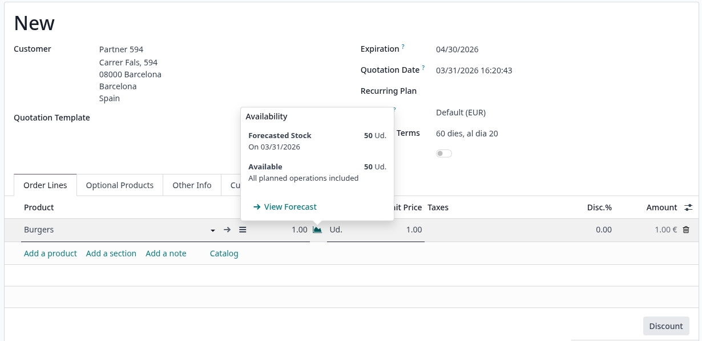
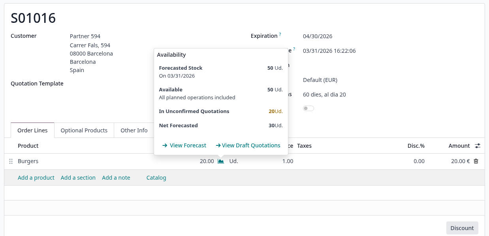
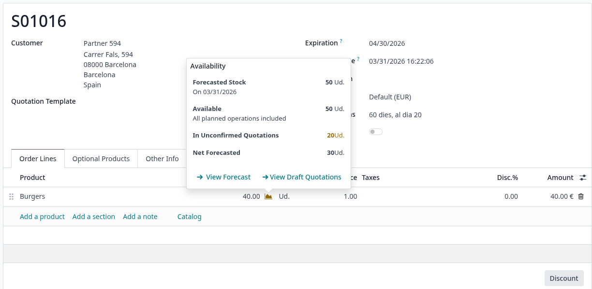
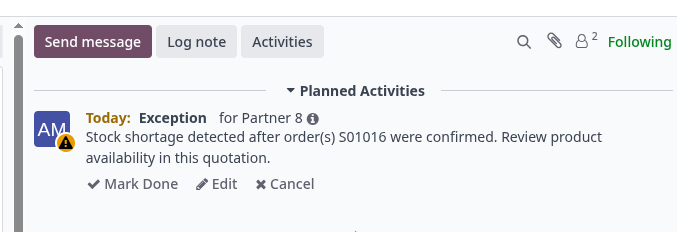

Key Features
Real-Time Stock Warning
Draft Quotation Visibility
Automatic Exception Activity

In a standard Odoo installation, the availability popover on a sale order line shows Forecasted Stock and Available units, taking into account only confirmed operations. Quotations that are still in draft are completely ignored, which can lead to unexpected stock shortages when they are eventually confirmed.

With this module, the widget gains two new fields: In Unconfirmed Quotations, showing units already committed in draft sales orders, and Net Forecasted, the real available stock once those quotations are factored in. A View Draft Quotations link lets you navigate directly to the conflicting orders.

When confirming the current quotation would compromise stock already reserved in other draft orders, the widget turns yellow as a clear visual alert. This gives the sales team an immediate signal to review availability before proceeding, avoiding conflicts downstream.

When a sale order is confirmed and it causes a stock shortage for other existing draft quotations, an Exception activity is automatically created on those affected records. The activity message identifies the confirmed order responsible, prompting the assigned user to review and resolve the conflict before it becomes a delivery problem.

Real-Time Stock Warning
Draft Quotation Visibility
Automatic Exception Activity